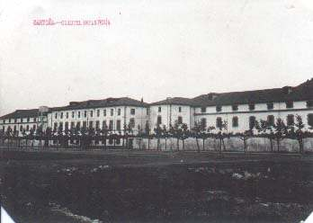

Nos vamos acercando a la realidad, aunque aún hay diferencias con el actual. Observar el depósito de agua en el exterior del edificio (con la de patio que había en el interior...) (
Foto http://www.villadesantona.com
)
